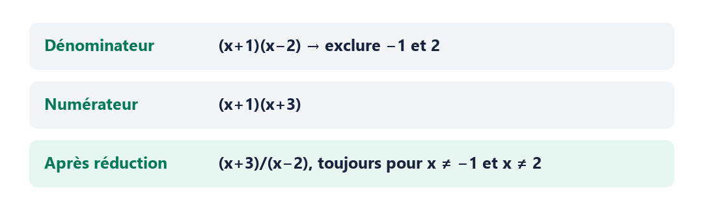

Comprendre le cours
1. Rendre une équation plus simple
Résoudre une équation revient à trouver toutes les valeurs qui rendent ses deux membres égaux. Ajouter la même quantité aux deux membres, ou les multiplier par un coefficient non nul, conserve les solutions. Avant de diviser par une expression qui contient l’inconnue, traite séparément le cas où cette expression vaut zéro.
Pour un produit nul, au moins un facteur doit être nul. Pour un second degré, commence par chercher une factorisation ou une identité remarquable. À défaut, utilise le discriminant b²−4ac. Si le coefficient de x² dépend d’un paramètre, traite le cas où il devient nul avant de choisir la méthode.
2. Comparer sans perdre le sens de l’inégalité
Multiplier ou diviser une inégalité par un nombre négatif inverse son sens. Pour une expression factorisée, repère les valeurs où un facteur s’annule ou n’existe pas. Découpe la droite en intervalles, détermine le signe de chaque facteur puis celui du produit. Un zéro du dénominateur reste exclu.
Pour encadrer sin(x), pars de −1≤sin(x)≤1. Une multiplication négative échange les deux bornes. Pour encadrer son carré, remarque que le carré est positif et que |sin(x)|≤1.
3. Garder les conditions d’une racine ou d’une fraction
Une racine carrée réelle demande un contenu positif ou nul et son résultat est positif ou nul. Pour une équation √u=v, impose u≥0 et v≥0 avant d’élever au carré. Substitue toujours les candidats dans l’équation de départ.

4. Dériver puis lire les variations
La pente locale se lit avec la dérivée. Pour une composée, dérive la fonction extérieure puis multiplie par la dérivée de l’intérieur. Pour un quotient u/v, la dérivée vaut (u′v−uv′)/v² là où le quotient est dérivable. Vérifie le domaine avant de simplifier.
Pour les variations, utilise le signe de f′ sur chaque intervalle du domaine. Un changement de signe qui va de positif à négatif donne un maximum local dans les conditions usuelles. Si la fonction n’existe pas à une frontière, sépare les deux intervalles.
5. Manipuler les coefficients binomiaux
n! multiplie les entiers de 1 à n, avec 0!=1. Le coefficient C(n,k) compte les sélections de k éléments parmi n et vaut n!/(k!(n−k)!). On peut regrouper deux coefficients successifs par la relation de Pascal.
Du cours aux TD et TP
Questions TD & TP
TD, ex. 1 à 3 · Étudier un paramètre, un signe et une racine
Énoncé. Étudier (a+1)x+b−2=0 selon les paramètres, résoudre (4x+1)(−x+3)≥0, puis résoudre √(x+1)+1=2x.
- Si
a≠−1, divise para+1et trouvex=(2−b)/(a+1). Sia=−1, il resteb−2=0. Tout réel convient sib=2. Sinon il n’y a pas de solution. - Pour l’inégalité, les facteurs s’annulent en −1/4 et 3. Les deux sont positifs à 0, donc l’intervalle central satisfait l’inégalité. Hors de cet intervalle, les signes sont opposés. Les deux bornes ont un produit nul et sont incluses.
- Dans l’équation avec racine, le domaine commence à −1. Isole la racine.
2x−1doit être positif ou nul, doncx≥1/2. En élevant au carré, on obtient4x²−5x=0. Zéro est à rejeter.x=5/4satisfait l’équation de départ.
TD, ex. 4 et 5 · Calculer sur le bon domaine
Énoncé. Simplifier (x²+4x+3)/(x²−x−2) en donnant son domaine. Résoudre ensuite (5x+3)/(2x−7)=m selon m.
- Factorise le dénominateur initial en
(x+1)(x−2). Exclue −1 et 2. Le numérateur vaut(x+1)(x+3). La fraction vaut(x+3)/(x−2)sur le domaine initial. - Pour la seconde équation, impose
x≠7/2. Multiplie par2x−7et regroupe les termes. On obtient(2m−5)x=7m+3. - Si
m=5/2, le membre de gauche vaut zéro et le membre de droite est non nul. Sinon, la solution est(7m+3)/(2m−5). Elle ne peut valoir7/2, car l’égalité impliquerait6=−35.
TD, ex. 7 · Étudier (2x+3)/(x²−4)
Énoncé. Déterminer le domaine, les intersections avec les axes, la dérivée et les variations.
- Exclue −2 et 2. L’intersection avec l’axe des abscisses est en
x=−3/2. Àx=0, l’ordonnée vaut−3/4. - La dérivée est
−2(x²+3x+4)/(x²−4)². Le trinôme possède un discriminant9−16=−7et son coefficient dominant est positif. Le signe de la dérivée est donc négatif partout où la fonction existe. - Elle décroît sur chacun des trois intervalles
(−∞,−2),(−2,2)et(2,+∞). Il n’y a aucun extremum local sur son domaine.
TD, ex. 8 · Additionner deux coefficients binomiaux
Énoncé. Pour 0≤k≤n−1, simplifier C(n,k)+C(n,k+1) avec les factorielles.
- Choisis le dénominateur commun
(k+1)!(n−k)!. Le premier numérateur devientn!(k+1). Le second devientn!(n−k). - La somme donne
n!(n+1)=(n+1)!. On retrouve doncC(n+1,k+1). La restrictionk≤n−1garantit quek+1≤ndans le calcul initial.